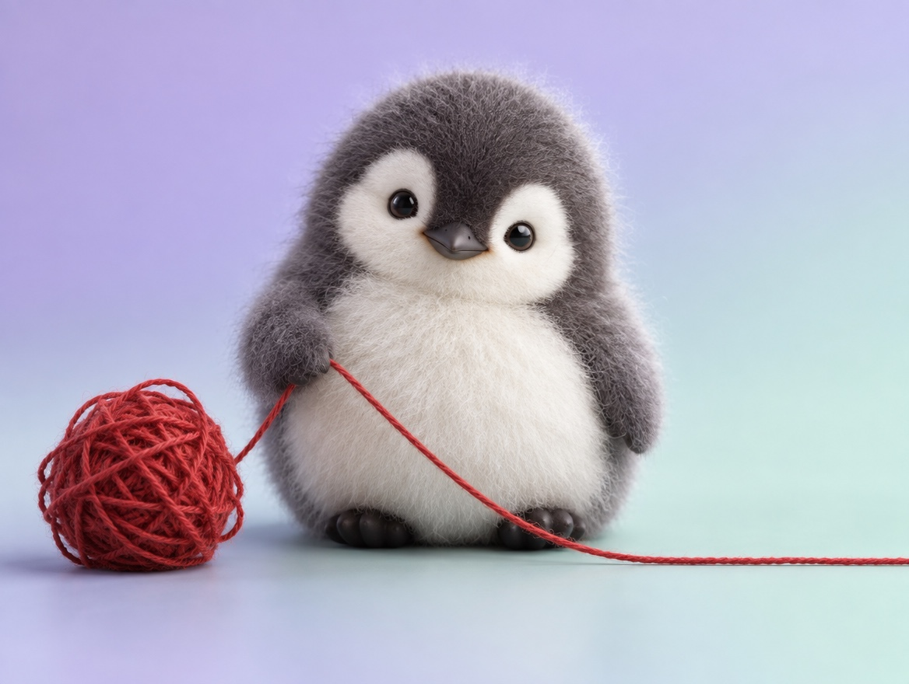

📝 DRAFT · 下書き — まだ本番に出していません · 下書き一覧
🐧 EVERYDAY LIFE⚡ 18 SEC
When your thoughts go round and round, ask "What can I do now?" 🌀

Round And Round
Sometimes you think about the same thing again and again, right?
Stress Formula
It is said stress = the size of the event × how long you go around.
You may not change the event, but you can go around less.
⚡ TRY IT
Stop the thinking loop
😣 My English test is next week…😣 Did I say something wrong to my friend?😣 My room is a big mess…
What if I fail?Maybe they are angry…Where do I start?
I am bad at English…Why did I say that?I am so lazy…
Everyone is better than me…What if they hate me?It will never be clean…
😵 Dizzy
The worries are spinning. Tap the question to pull one out!
So dizzy! Tap the question 👇
Good! A worry turned into a small step.
The loop is gone. Tap each step when you do it ✅
🎉 Done! You are moving forward, not going around.
Magic Question
At those times, ask yourself, "What can I do now?"
Ask AI Too
It is OK to ask AI, too.
📚 I learned this from the Japanese blog "Panda no Ondo".